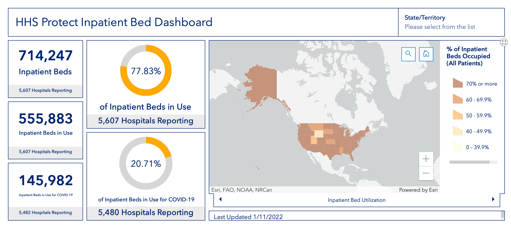
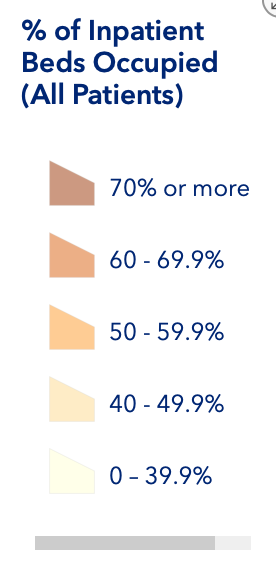

Intro
Curious to see hospital bed utilization, a search brought me to the HHS Inpatient Dashboard.

The amount of dark brown (70%+) is shocking.
This brought up two questions:
- What is the historical rate of usage / occupancy?
- How did they choose the scale used to color the graph?
Historical Usage
Occupancy rate data from the CDC shows that the long-term average occupancy rate, ignoring the oldest years of 1975 and 1980, is in the mid to high sixties.
| Year | Occupancy Rate |
|---|---|
| 1975 | 76.7% |
| 1980 | 77.7% |
| 1990 | 69.5% |
| 2000 | 66.1% |
| 2005 | 69.3% |
| 2010 | 66.6% |
| 2013 | 64.7% |
| 2014 | 64.8% |
| 2015 | 65.5% |
Statistica data shows a few more years, with a similar range on the occupancy rate.
The mean from 2008-2017 was 66.1%.
This gives a good idea of an average (annual) occupancy rate in non-pandemic years.
Scale and Colour Choice
Bin Methods
This policyviz article by Jonathan Schwabish presents 4 primary binning models for maps:
- No bins: continuous color map
- Equal interval bins: If we use 5 bins like the HHS did 0-100% would be divided as (0-20, 20-40, 40-60, 60-80, 80+)
- Data distribution bins: have the same number of observations per bin
- Arbitrary: map producer’s choice
Number of Bins

These formulas suggest 7 as a good number of bins.
Colour Choice
This article by Mike Yi on Chartio discusses color choice. The graphics and quotes below are from that article.
“When the variable assigned to be colored is numeric or has inherently ordered values, then it can be depicted with a sequential palette. Colors are assigned to data values in a continuum, usually based on lightness, hue, or both.”

“If our numeric variable has a meaningful central value, like zero, then we can apply a diverging palette. A diverging palette is essentially a combination of two sequential palettes with a shared endpoint sitting at the central value. Values larger than the center are assigned to colors on one side of the center, while smaller values get assigned to colors on the opposing side.”

Mike also says discrete color palettes allow us to better associate colors to values, but that we lose the ability to compare values within a bin.
HHS Scale

The HHS used a 5 bin method with arbitrary bins.
The highest category (70%+, colored dark brown) having an interval as large as 30% and starting so close to the long term average of mid to high 60’s seems like a poor choice. Even a state with a few percentage points above the long term occupancy average would find itself in the highest category in year like 2005 or 2010.
Fixing the Map
Some Failures
I tried equal length intervals and continuous coloring, but they both produced inadequate charts.
A diverging color with white as the central value made it easy to see which states were above and below the long term average. However this data is sequential, so a sequential color choice is easier for viewers to comprehend.
Custom Bins
The following criteria were used:
- Show 66% as a historical average
- More concern is placed on over capacity than under capacity
- Roughly 7 bins should be used
Using these criteria I came up with the following ranges:
0-40, 40-50, 50-60, 60-70, 70-80, 80-90, 90+

Adding more bin on the top end allows seeing the trends more clearly. Including the historical average of inpatient bed utilization gives readers context about what a normal figure is.
I am still not happy with the inability to see how many states fall in each bin. For instance it is not easy to see that no states fall in 90%+ territory. Adding a bar chart similar to this urban.org article would help considerably, and I may do so in the future.

Preparing for Change
It is possible that the HHS made a good choice for bins in another time, but that during a pandemic the bin choices are less optimal. When making live data dashboards available my recommendation would be to consider if changes in the data could negatively impact your data visualization and automate warnings to administrators. In the map above, if multiple data points started to fall into the 0-40% range, especially below 30%, a new bin choice would be necessary. If the inpatient bed utilization average changed significantly over a long period, like the decades from the 1970’s and 1980’s to the 2000’s and 2010’s, the color choices for the mean value would likewise have to change.
Even a reminder to do an annual check may even suffice.
Summary
Data visualization is hard, especially on live data. The HHS could improve HHS Inpatient Dashboard by simply adding some more data bins.
I am to see such a great resource for the public from the HHS. This visualization and data is publicly available and updated seemingly daily. Government agencies everywhere should strive to make such up-to-date information freely available to the public.
More Reading
I really liked Jonathan Schwabish’s articles, so two more are included below: